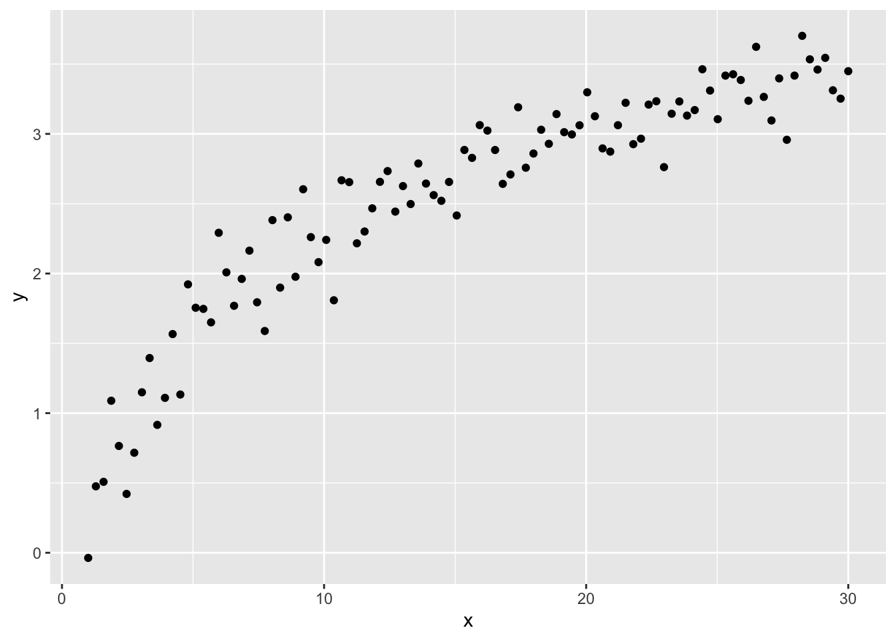
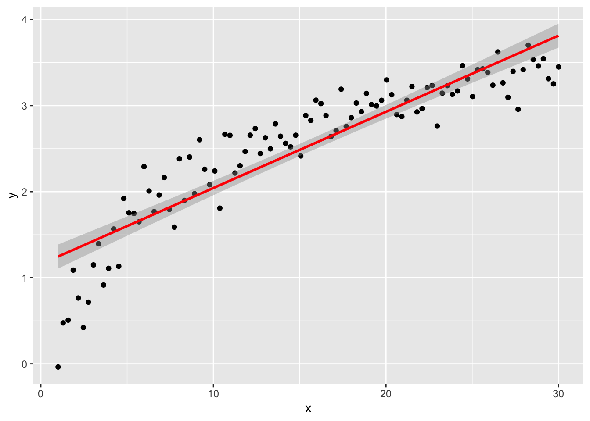
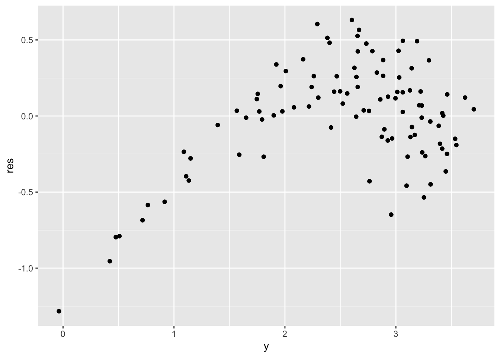
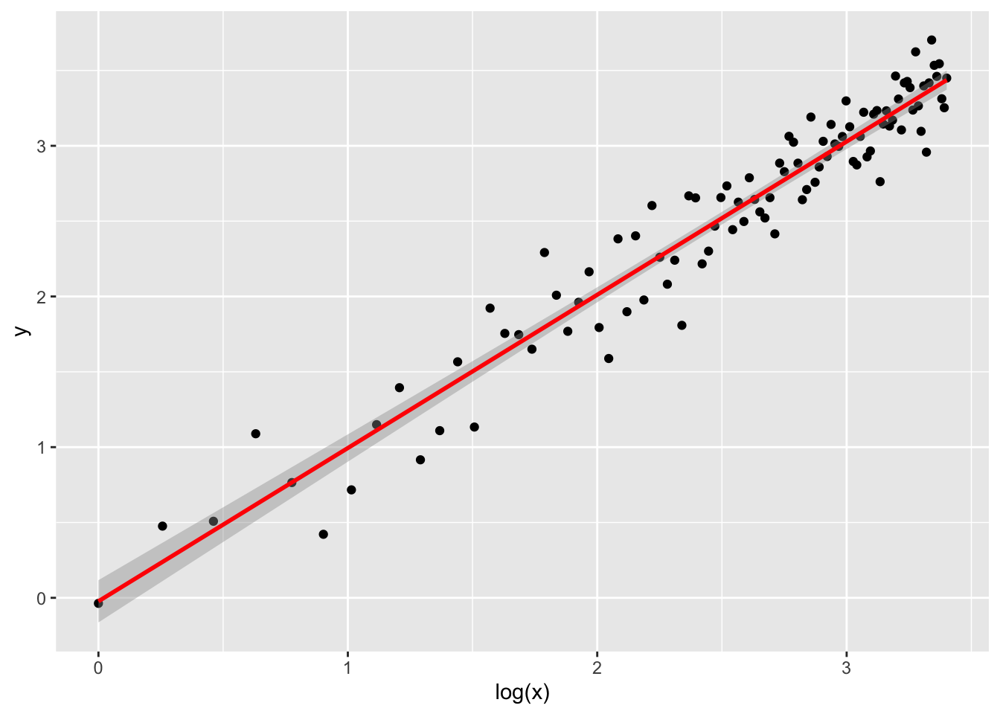

Chapter 6 Interactions and qualitative predictors
6.1 Transformations
Formulae in R linear models are much more powerful than what seen so far. In some cases we might be interested in transforming a variable before fitting the linear model.
6.1.1 A simple example
For instance, let’s take this synthetic dataset:
library(tibble)
n <- 100
synth <- tibble(
x = seq(from = 1, to = 30, length.out = n),
y = log(x) + rnorm(n, 0, 0.2)
)which looks like this:

Of course, we can try to fit a linear model without any extra effort
naive_lm <- lm(y ~ x, data = synth)
ggplot(naive_lm, mapping = aes(x, y)) +
geom_point() +
geom_smooth(method = "lm", color = "red")## `geom_smooth()` using formula = 'y ~ x'
but if we plot the residuals, we can detect some issues for low values of \(y\) (definitely not uncorrelated).
library(dplyr)
synth %>%
mutate(res = naive_lm$residuals) %>% # adds the residual column
ggplot() +
geom_point(aes(y, res))
By understanding how \(x\) is distributed, we can fix this issue and fit the model on a transformation of itself, clearly \(\log(x)\). We do this simply by adding the desired transformation in the formula, meaning that we don’t have to tranform the dataset beforehand.
log_lm <- lm(y ~ log(x), data = synth)
ggplot(log_lm,
mapping = aes(`log(x)`, y)
) + # notice the backticks!
geom_point() +
geom_smooth(method = "lm", color = "red")## `geom_smooth()` using formula = 'y ~ x'
and the residuals plot.
synth %>%
mutate(res = log_lm$residuals) %>% # adds the residual column
ggplot() +
geom_point(aes(y, res))
6.1.2 On advertising
Back to our real dataset.
## Rows: 200 Columns: 4
## ── Column specification ────────────────────────────────────────────────────────
## Delimiter: ","
## dbl (4): TV, Radio, Newspaper, Sales
##
## ℹ Use `spec()` to retrieve the full column specification for this data.
## ℹ Specify the column types or set `show_col_types = FALSE` to quiet this message.Let’s try applying a transformation to the most promising predictor, in particular let’s us \(\sqrt{TV}\). The choice of the square root transformation comes from a first look at the scatter plot shown previously (TV against Sales), where we can detect a slightly curved trend which resembles a curve \(y = \sqrt{x}\).
Let’s plot the data after the transformation and observe that its trend better fit a straight line.
advertising %>%
dplyr::select(Sales, TV) %>%
dplyr::mutate(sqrtTV = sqrt(TV)) %>%
ggplot(aes(sqrtTV, Sales)) +
geom_point() +
geom_smooth(method = "lm", color = "red")## `geom_smooth()` using formula = 'y ~ x'
We can fit a linear model. Its summary table
will show a better \(R^2\) score.
Exercise: plot the regression line and compare it with the simple model fitted on the raw data
The following two commands might help in inspecting a linear model with transformed data.
## (Intercept) sqrt(TV)
## 1 1 15.169047
## 2 1 6.670832
## 3 1 4.147288
## 4 1 12.308534
## 5 1 13.446189
## 6 1 2.949576## Sales ~ sqrt(TV)
## attr(,"variables")
## list(Sales, sqrt(TV))
## attr(,"factors")
## sqrt(TV)
## Sales 0
## sqrt(TV) 1
## attr(,"term.labels")
## [1] "sqrt(TV)"
## attr(,"order")
## [1] 1
## attr(,"intercept")
## [1] 1
## attr(,"response")
## [1] 1
## attr(,".Environment")
## <environment: R_GlobalEnv>
## attr(,"predvars")
## list(Sales, sqrt(TV))
## attr(,"dataClasses")
## Sales sqrt(TV)
## "numeric" "numeric"6.2 Model selection
6.2.1 R-squared
One of the indicators computed with summary on a fitted linear model
is the \(R^2\) index (R-squared, or coefficient of determination). It is defined as
\[ R^2 = 1 - \frac{\sum_i (y_i - \hat y_i)^2}{\sum_i (y_i - \bar y)^2} \]
and shows the impact of the residuals proportionately to the variance of the response variable. It can be used to compare different models although it should not be considered as an absolute score of the model. The closer it is to 1, the better is the model fit.
This output, for instance, shows how the transformation used above seems to improve the accuracy of the regression task.
## [1] 0.8121757## [1] 0.82166966.2.2 ANOVA
Another way of comparing two models, in particular one model with a smaller nested model, is the ANOVA test, which is an instance of the F-test, with statistics
\[ F = \frac{\left(\frac{RSS_1 - RSS_2}{p_2 - p_1}\right)}{\left(\frac{RSS_2}{n - p_2}\right)} \]
where \(RSS\) is the residual sum of squares and \(p_2 > p_1\) (model 1 is smaller). We know from theory that \(F \sim F(p_2 - p_1, n - p_2)\)
A low p-value for the F statistic means that we can reject the hypothesis that the smaller model explains the data well enough.
Here we compare the model with a single predictor (squared root of TV), which is the smaller model, with a model with also the Radio data as additional predictor.
## Analysis of Variance Table
##
## Model 1: Sales ~ sqrt(TV)
## Model 2: Sales ~ sqrt(TV) + Radio
## Res.Df RSS Df Sum of Sq F Pr(>F)
## 1 198 990.80
## 2 197 410.88 1 579.92 278.04 < 2.2e-16 ***
## ---
## Signif. codes: 0 '***' 0.001 '**' 0.01 '*' 0.05 '.' 0.1 ' ' 1Exercise: compute both the F-statistics and the associated p-value “by hand” and verify your solution with the anova summary table.
6.3 Qualitative predictors
We recycle a textbook example taken from
McClave JT., Benson PG. e Sincich T. (2014).
Statistics for Business and Economics.
Pearson Education Limited.
We want to study the effect on the response (variable distance)
of 4 different brands of golf ball (A,B,C,D) (variable brand)
and the club type (DRIVER/IRON) (variable club).
These two features are qualitative predictors, also called factors.
A robot player is used.
## Rows: 8 Columns: 5
## ── Column specification ────────────────────────────────────────────────────────
## Delimiter: "\t"
## chr (1): club
## dbl (4): A, B, C, D
##
## ℹ Use `spec()` to retrieve the full column specification for this data.
## ℹ Specify the column types or set `show_col_types = FALSE` to quiet this message.## cols(
## club = col_character(),
## A = col_double(),
## B = col_double(),
## C = col_double(),
## D = col_double()
## )Although it’s not always necessary, it is always best to
explicitly tell R to interpret qualitative predictors data as factors.
This can be done with read_tsv, first by reading the data as it is
and then calling the spec() function over the new tibble.
In this case, the output is saying that the first column has
been detected as numeric, which is false, because the golfer
number is just an identification number.
Therefore we correct this by copying the output, manually editing
the first column type from col_double() to col_factor() and
setting the read_tsv parameter col_types to that.
wide_golf <- read_tsv("./datasets/golfer.tsv",
col_types = cols(
club = readr::col_factor(),
A = col_double(),
B = col_double(),
C = col_double(),
D = col_double()
)
)
library(dplyr)
# need to switch from wide to long format
golf <- wide_golf %>%
gather(brand, distance, A:D)
## if using data.frame, you can use `melt()` from
## reshape2
# golf <- melt(wide_golf, id.vars = 1,
# variable.name = "brand",
# value.name = "distance")Let us study first the effect of brand on the distance.
##
## Call:
## lm(formula = distance ~ brand, data = golf)
##
## Residuals:
## Min 1Q Median 3Q Max
## -48.638 -31.703 -0.481 32.947 42.475
##
## Coefficients:
## Estimate Std. Error t value Pr(>|t|)
## (Intercept) 199.862 12.262 16.299 8.04e-16 ***
## brandB 8.338 17.341 0.481 0.634
## brandC 5.275 17.341 0.304 0.763
## brandD -4.737 17.341 -0.273 0.787
## ---
## Signif. codes: 0 '***' 0.001 '**' 0.01 '*' 0.05 '.' 0.1 ' ' 1
##
## Residual standard error: 34.68 on 28 degrees of freedom
## Multiple R-squared: 0.02322, Adjusted R-squared: -0.08143
## F-statistic: 0.2219 on 3 and 28 DF, p-value: 0.8804## (Intercept) brandB brandC brandD
## 1 1 0 0 0
## 2 1 0 0 0
## 3 1 0 0 0
## 4 1 0 0 0
## 5 1 0 0 0
## 6 1 0 0 0
## 7 1 0 0 0
## 8 1 0 0 0
## 9 1 1 0 0
## 10 1 1 0 0
## 11 1 1 0 0
## 12 1 1 0 0
## 13 1 1 0 0
## 14 1 1 0 0
## 15 1 1 0 0
## 16 1 1 0 0
## 17 1 0 1 0
## 18 1 0 1 0
## 19 1 0 1 0
## 20 1 0 1 0
## 21 1 0 1 0
## 22 1 0 1 0
## 23 1 0 1 0
## 24 1 0 1 0
## 25 1 0 0 1
## 26 1 0 0 1
## 27 1 0 0 1
## 28 1 0 0 1
## 29 1 0 0 1
## 30 1 0 0 1
## 31 1 0 0 1
## 32 1 0 0 1
## attr(,"assign")
## [1] 0 1 1 1
## attr(,"contrasts")
## attr(,"contrasts")$brand
## [1] "contr.treatment"6.4 Interactions
Interactions are added in the lm formula. More specifically:
a:b(colon op) includes the cross-variable between two predictorsa*b(asterisk op) includes the two predictors individually and the cross-variable (i.e. writingy ~ a + b + a:bis equivalent to writingy ~ a*b)
Back to our dataset, let us now add the second factor club and build a ‘small’ additive model…
##
## Call:
## lm(formula = distance ~ brand + club, data = golf)
##
## Residuals:
## Min 1Q Median 3Q Max
## -16.9688 -5.2156 0.7375 5.2875 11.2063
##
## Coefficients:
## Estimate Std. Error t value Pr(>|t|)
## (Intercept) 231.531 3.032 76.371 <2e-16 ***
## brandB 8.338 3.835 2.174 0.0386 *
## brandC 5.275 3.835 1.376 0.1803
## brandD -4.737 3.835 -1.235 0.2273
## clubIRON -63.337 2.712 -23.358 <2e-16 ***
## ---
## Signif. codes: 0 '***' 0.001 '**' 0.01 '*' 0.05 '.' 0.1 ' ' 1
##
## Residual standard error: 7.67 on 27 degrees of freedom
## Multiple R-squared: 0.9539, Adjusted R-squared: 0.9471
## F-statistic: 139.8 on 4 and 27 DF, p-value: < 2.2e-16… and a larger one with interaction.
##
## Call:
## lm(formula = distance ~ brand * club, data = golf)
##
## Residuals:
## Min 1Q Median 3Q Max
## -10.6750 -2.7000 0.3125 3.4875 11.8250
##
## Coefficients:
## Estimate Std. Error t value Pr(>|t|)
## (Intercept) 228.425 2.927 78.051 < 2e-16 ***
## brandB 5.300 4.139 1.281 0.21259
## brandC 14.675 4.139 3.546 0.00165 **
## brandD 1.325 4.139 0.320 0.75163
## clubIRON -57.125 4.139 -13.802 6.55e-13 ***
## brandB:clubIRON 6.075 5.853 1.038 0.30966
## brandC:clubIRON -18.800 5.853 -3.212 0.00373 **
## brandD:clubIRON -12.125 5.853 -2.072 0.04923 *
## ---
## Signif. codes: 0 '***' 0.001 '**' 0.01 '*' 0.05 '.' 0.1 ' ' 1
##
## Residual standard error: 5.853 on 24 degrees of freedom
## Multiple R-squared: 0.9762, Adjusted R-squared: 0.9692
## F-statistic: 140.4 on 7 and 24 DF, p-value: < 2.2e-16An interaction plot suggests interactions may be significant (the lines are not parallel), but we have to test for it since interaction plots are subject to sampling variation.
6.5 Model comparison
We can compare the complete model to a smaller one with ANOVA test.
## Analysis of Variance Table
##
## Response: distance
## Df Sum Sq Mean Sq F value Pr(>F)
## brand 3 801 267 7.7908 0.0008401 ***
## club 1 32093 32093 936.7516 < 2.2e-16 ***
## brand:club 3 766 255 7.4524 0.0010789 **
## Residuals 24 822 34
## ---
## Signif. codes: 0 '***' 0.001 '**' 0.01 '*' 0.05 '.' 0.1 ' ' 1With the last anova() command we have built a more traditional anova table. We can compare the two models also with the anova command.
## Analysis of Variance Table
##
## Model 1: distance ~ brand + club
## Model 2: distance ~ brand * club
## Res.Df RSS Df Sum of Sq F Pr(>F)
## 1 27 1588.20
## 2 24 822.24 3 765.96 7.4524 0.001079 **
## ---
## Signif. codes: 0 '***' 0.001 '**' 0.01 '*' 0.05 '.' 0.1 ' ' 1Interactions are significant, meaning each combination of the two factors tells a different story.
## 1 2 3 4 5 6 7 8 9 10
## 228.425 228.425 228.425 228.425 171.300 171.300 171.300 171.300 233.725 233.725
## 11 12 13 14 15 16 17 18 19 20
## 233.725 233.725 182.675 182.675 182.675 182.675 243.100 243.100 243.100 243.100
## 21 22 23 24 25 26 27 28 29 30
## 167.175 167.175 167.175 167.175 229.750 229.750 229.750 229.750 160.500 160.500
## 31 32
## 160.500 160.5006.6 Predict
Especially when dealing with qualitative data, predictions for
new unseen data can be easily computed with the predict function,
which simply applies the regression coefficients to the provided data
(arbitrarily generated below inside a tibble).
predict.lm(small_lm,
newdata = data.frame(
club = c("DRIVER", "IRON", "IRON"),
brand = c("A", "B", "B")
),
interval = "confidence"
)## fit lwr upr
## 1 231.5312 225.3108 237.7517
## 2 176.5312 170.3108 182.7517
## 3 176.5312 170.3108 182.7517# for prediction intervals...
predict.lm(large_lm,
newdata = data.frame(club = "DRIVER", brand = "A"),
interval = "prediction",
level = .99
)## fit lwr upr
## 1 228.425 210.1216 246.7284